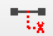

To operate an HMI client online with real devices, you need to have an HMI device connected. (To run the HMI in simulation mode, refer to the following section Test HMI Locally.)
Click in the Deploy and Diagnostic editor. This builds the HMI project, and initializes and starts the client with the latest data. To successfully deploy the HMI project, the HMI Manager must be running on the target computer.
An HMI device can also be started directly from the Windows Start menu. However, this starts the most recent compiled version of the HMI project and the latest project data may not be available.
You can make runtime changes to the project, for example using the command in the Deploy and Diagnostic editor, without recompiling and re-deploying the entire application including the HMI client. In this case, the HMI client and the project settings will be different as follows:
Items removed from the project, but which remain in the HMI client, are displayed in the color magenta (pink) in the HMI client.
Items added to the project, but not yet included in the HMI client, will not be visible in the HMI client.
For testing purposes, a local test HMI can be started from the EcoStruxure Automation Expert - Buildtime solution. Right-click a resolution (nodes below the Canvases node in the Solution Explorer window) and select Start Local HMI. The local test HMI does not require the HMI device to be running.
By default, the HMI canvas positioned on top in the topology is displayed first. Using the function Startup Canvas, you can choose the canvas to be opened first.
The local test HMI starts the canvases of one node (one resolution if there are no topology nodes, or one topology node of a resolution).
To start several HMI windows simultaneously, you have to use the HMI Manager with a configuration.
To display the HMI Runtime Log Viewer, press F2 (or the icon) during HMI runtime.
The log shows runtime messages and detected errors caused by symbol or faceplate programming.
A description of the toolbar of the HMI Runtime Log Viewer window can be found in the Deploy and Diagnostic editor.

icon) during HMI runtime. The Info dialog opens listing the Runtime Connections displaying the Device identity, Endpoint IP address, and connection status.If several HMI windows need to be started simultaneously, you can specify multiple startup canvases. To do this:
Select an HMI device in the Logical Devices editor.
In the Properties pad, for the attribute Startup Canvas, click on the ellipsis (...).
The CanvasTopologyStartConfigEditor opens.
Create as many resolutions as you need. To create a resolution click <New Resolution>, then complete the following elements for each resolution:
|
Element |
Description |
|---|---|
| <New Resolution> |
A click in this row will show it highlighted blue. A second click opens a drop down list containing the existent resolutions currently in the project. Choose the desired resolution to create a new entry. Each entry in the editor opens one HMI window. |
| Resolution |
Shows the name of the resolution. |
| Topology |
Opens a drop down menu to select something out of an existing topology. If no topology has been created in the relevant resolution (that means the canvases are directly in the resolution and not separated in several topology nodes) only Default is available. See also the New Topology menu item in the Canvas node. |
| HMI Startup Canvas |
Opens a drop down list to select the canvas which has to be opened first after starting the runtime. If this entry has been left empty, either the top level canvas of the topology will be used for startup, or, if a canvas has been defined by the use of the context menu entry HMI Startup Canvas as described above on this page, that canvas will be used. |
| Screen |
Defines the screen where the HMI will be opened. If the screen parameter is set to:
|
| Full Screen |
Defines whether the HMI will be opened in full screen mod:
|
This Panel devices parameter is then overwriting the value of these two other parameters:
Screen: from the CanvasTopolgyStartConfigEditor window.
ScreenNumber: from the Properties pad of the Start Canvas of the resolutions added in the CanvasTopolgyStartConfigEditor window.